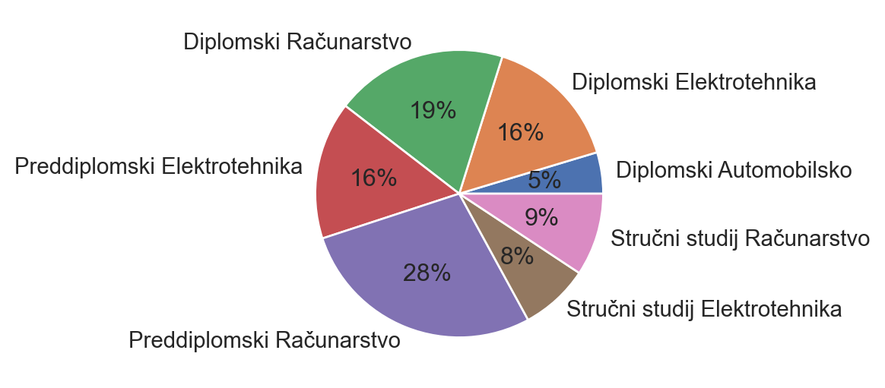
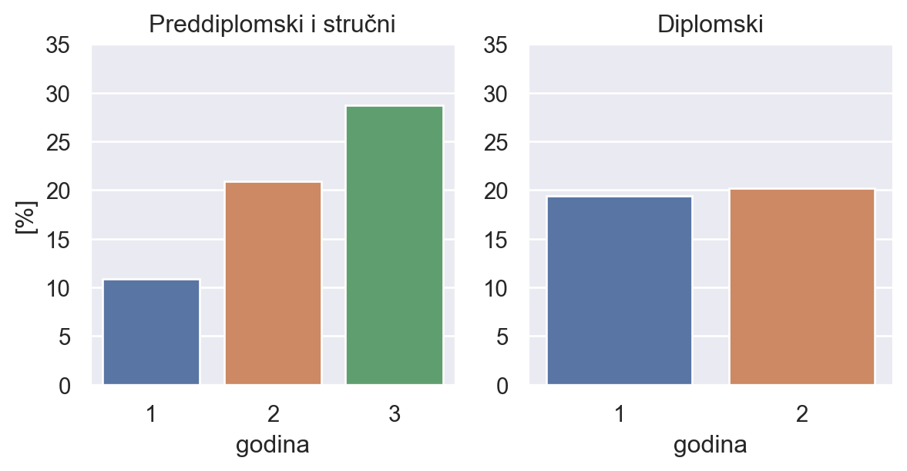
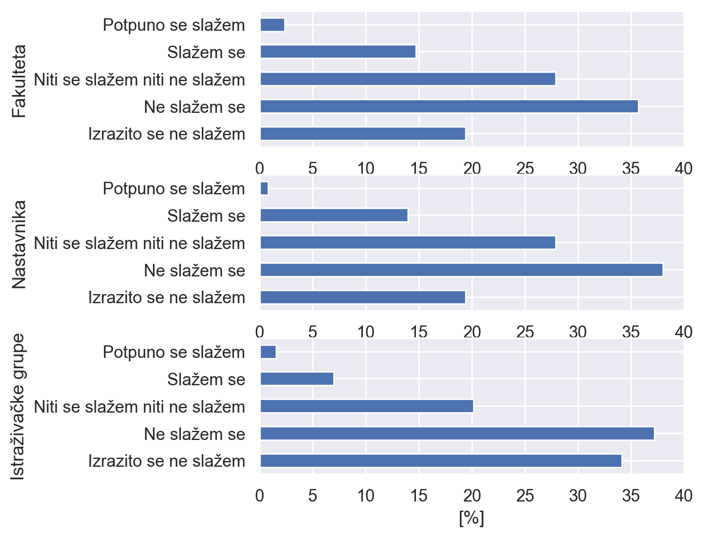
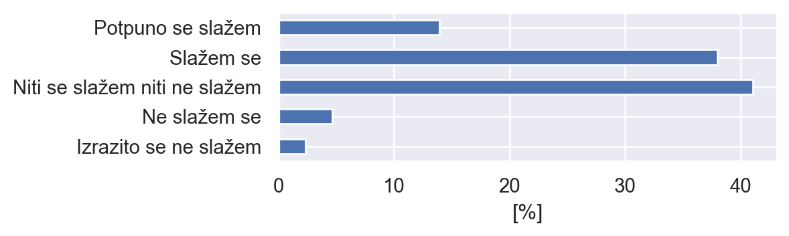
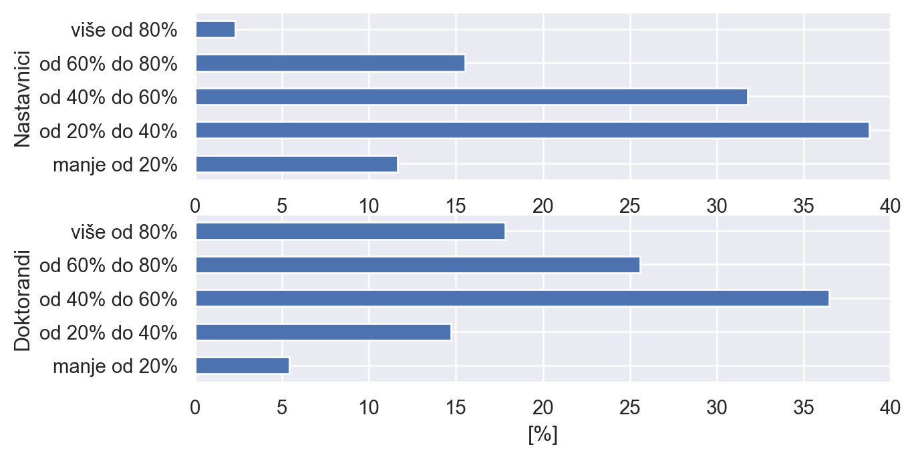
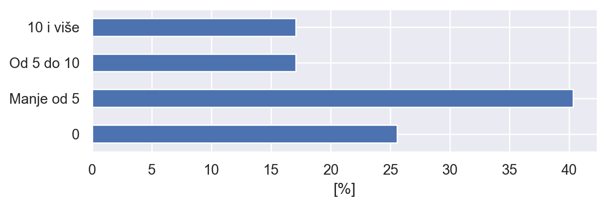
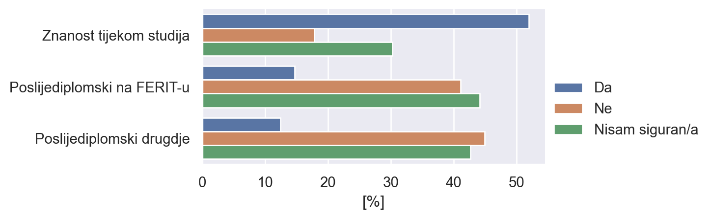
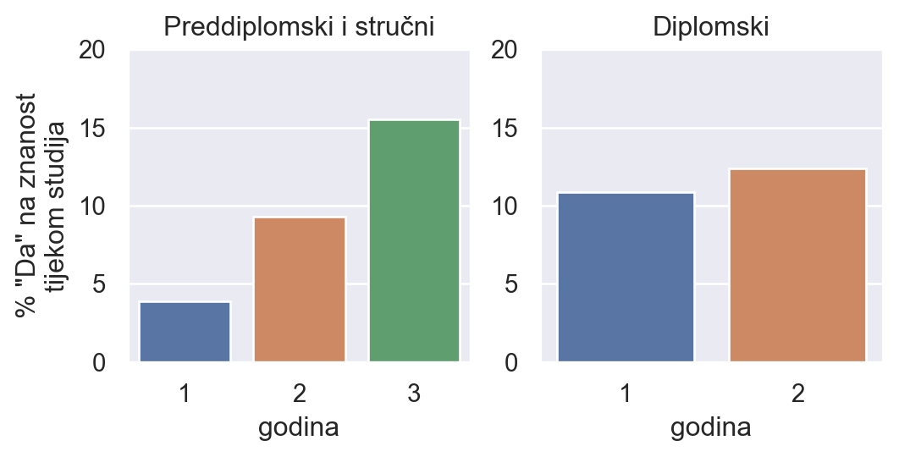
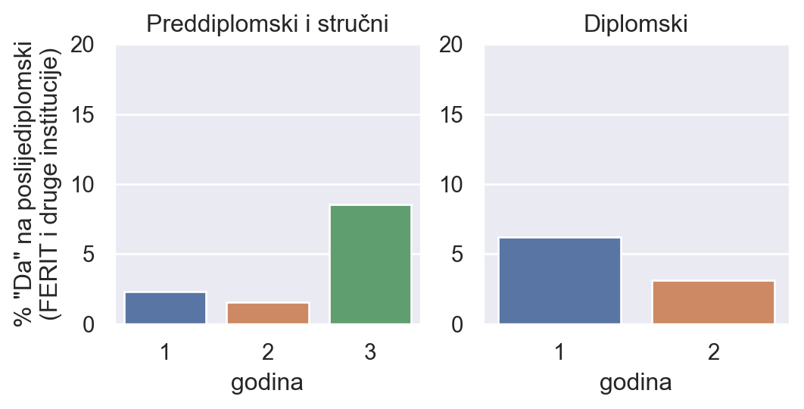

Sažetak
Glavni zaključci ankete su sljedeći:
- Više od 50% ispitanika (70 od 129) je zainteresirano za sudjelovanje na znanstvenim radovima tijekom studija. U najvećem su udjelu to studenti diplomskih studija i studenti 3. godine preddiplomskih studija.
- Međutim, studenti su loše informirani o znanstvenom radu fakulteta i istraživačkim grupama. Također, studenti imaju loše poznavanje čime se bave njihovi nastavnici.
- Studenti vjeruju da nastavnici i doktorandi koriste preko 40% svojeg vremena na znanost i nemaju loše mišljenje o znanstvenoj kompetenciji njihovih nastavnika.
- Studenti čitaju relativno mali broj znanstvenih radova tijekom svojeg studija.
- Studenti 3. godine su trenutno u najvećem postotku zainteresirani za znanosti i poslijediplomski studij, tako da nam na diplomske dolazi motivirana generacija studenata. :)
Zaključci upućuju na to da su studenti zainteresirani ali neinformirani o znanstvenom radu. Dakle, preduvjete imamo, samo je stvar pružanja prilike studentima za znanstveni rad putem popularizacije znanosti, gostujućih predavanja, naprednijih tema za diplomske i završne radove, sudjelovanjima na projektima, stručnim praksama i sl.
Komentari studenata:
``Trebali bi profesori na fakultetu više poticati nas studente za uključivanje u razne znanstvene projekte, odnosno da i mi probamo napraviti nešto praktično i da provedemo neko istraživanje”
``Bilo bi lijepo kada bi svi profesori na FERIT-u svoje studente više upućivali na znan.radove i davali im više motivacije,a ne tražili pamćenje nekih (nepotrebnih) informacija napamet.Vjerojatno bi onda i studenti pokazivali više volje,truda i rada za praktične i znanst.radove.”
``Dojma sam da su profesori preopterečeni nastavnim aktivnostima i kao posljedica toga se ne mogu baviti znanstvenim radom u mjeri u kojoj bi to bilo poželjno.”
``Ako se pruži prilika za sudjelovanje u izradi znanstvenog rada koji se ne sudara sa nastavom, ili pak ide u prilog nastavi (npr. oslobođenje pojedinih obaveza zbog ulozenog vremena na znanstvenom radu), svakako bih bio zainteresiran za takvu aktivnost. Smatram da su znanstveni radovi jedna od najučinkovitijih metoda za učenje i/ili podučavanje.”
``Rado bih sudjelovao na nekom znanstvenom radu ali nisam upoznat koje su mi mogućnosti niti kako upasti na nekakav znanstveni rad/projekt”
Cijela anketa:
1. Distribucija odgovora
Ukupno ima 129 ispitanika.

2. Upoznatost i mišljenje o znanosti na fakultetu
2.1. Upoznat/a sam sa znanstvenim radom fakulteta / nastavnika / istraživačkim grupama

Postoji manji broj studenata koji su dobro upoznati s radom fakulteta, ali većina se ne slaže ili izrazito ne slaže s tvrdnjom da su upoznati.
Studenti pokazuju puno manje poznavanje istraživačkih grupa u odnosu na prijašnja dva pitanja. Istraživačke su grupe do sada bile manje naglašene na našim web stranicama. Moguće je da će s novom web stranicom i većim fokusom na popularizaciju znanosti biti više upućeni.
2.2. Moji su nastavnici stručnjaci u svojem polju koji aktivno doprinose znanstvenoj zajednici

Studenti nemaju posebno loše mišljenje o svojim nastavnicima kao znanstvenicima, iako dobar dio studenata nema posebno mišljenje. Obzirom da je većina studenata neinformirana o istraživačkom radu nastavnika, moguće je da uzrok i ovdje neinformiranost.
2.3. Koliki postotak svojeg vremena nastavnik / doktoranad provodi na znanstvene aktivnosti (prema mišljenju studenata)

Studenti imaju poprilično realno viđenje utroška vremena nastavnika i doktoranada. Kod doktoranada moguće je da u stvarnosti doktorandi i veći postotak svojeg vremena ulažu u znanstveni rad. Iz ovog se daje zaključiti da studenti imaju realističnu sliku toga što znači raditi u akademiji, posebice na našem fakultetu.
3. Zainteresiranost studenata za znanost
3.1. Broj pročitanih znanstvenih radova tijekom dosadašnjeg školovanja

Obzirom da je većina ispitanika na preddiplomskom i stručnom studiju, za očekivati je da će brojke biti relativno niske. Unatoč tome, visok je udio studenata koji nikad tijekom školovanja nisu pročitali niti jedan znanstveni rad, što upućuje na nedostatak poticanja samostalnog istraživanja studenata, ili nedovoljan fokus na novitete u polju.
3.2. Zainteresiranost za znanost

Iznenađujuće velik broj ispitanih studenata je zainteresirano za sudjelovanje na znanstvenim radovima tijekom školovanja (>50%). S tim na umu, potrebno je pronaći načine da bolje prezentiramo i uvedemo studente u suradnju na znanstvenim radovima. Bilo to putem stručnih praksi, diplomskih i završnih, manjih zadataka na projektima i sl.
Dosta manji broj studenata je zainteresiran za poslijediplomski studij, ali utješna je činjenica što studenti ne prefereiraju poslijediplomske na drugim institucijama u odnosu na naš fakultet.
Tko je zainteresiran za znanost tijekom studija?

Kako je i očekivano, veća je zainteresiranost kod studenata 3. godine prediplomskih i kod studenata na diplomskim studijima. Ovo nam ujedno govori i najbolje vrijeme za prezentiranje znanstvenog rada studentima.
Tko je zainteresiran za poslijediplomski studij?

Zanimljivo je da su studenti 3. godine diplomskog najzainteresiraniji, a zatim tek 1. i 2. godine diplomskog. Ako su rezultati statistički značajni, to može bit uslijed razlika među generacijama, a može biti i da studenti izgube interes tijekom diplomskog studija. Jedan od potencijalnih razloga za to može bit zaposlenje u industriji, ili nedovoljno prilika za rad u znanosti tijekom studija.